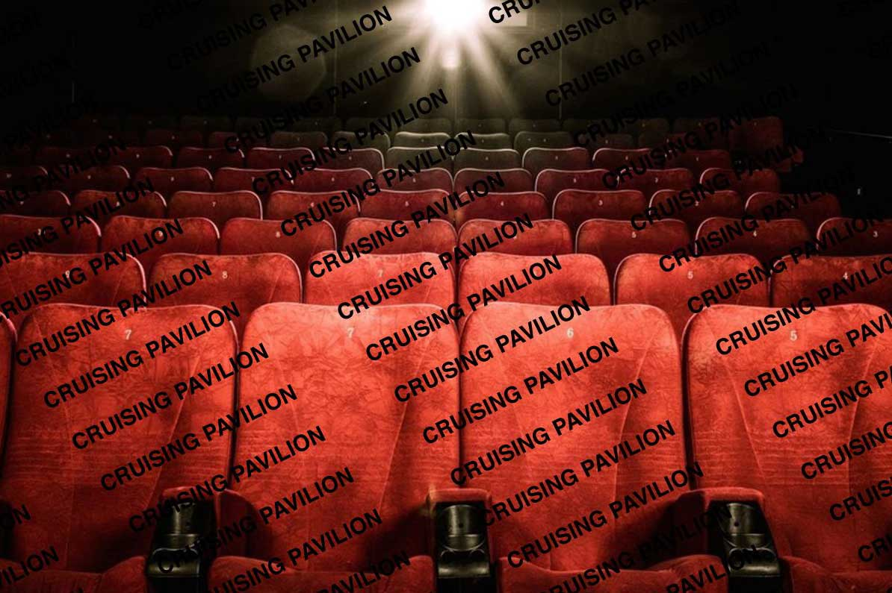
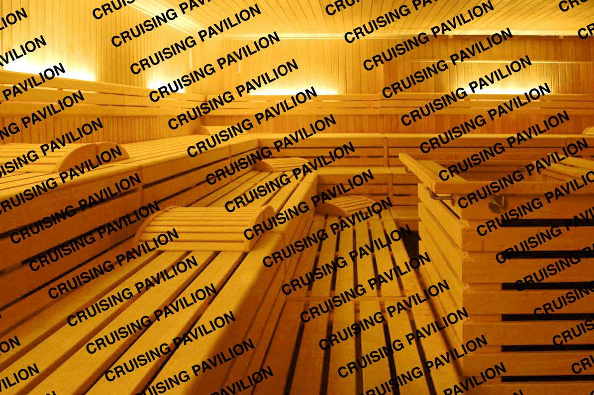
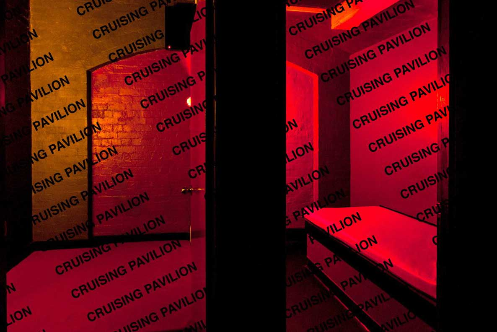
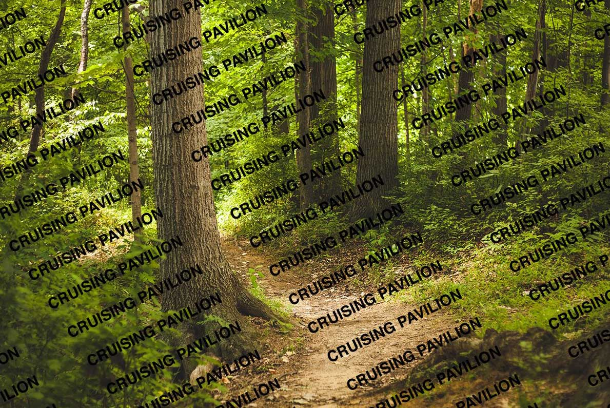
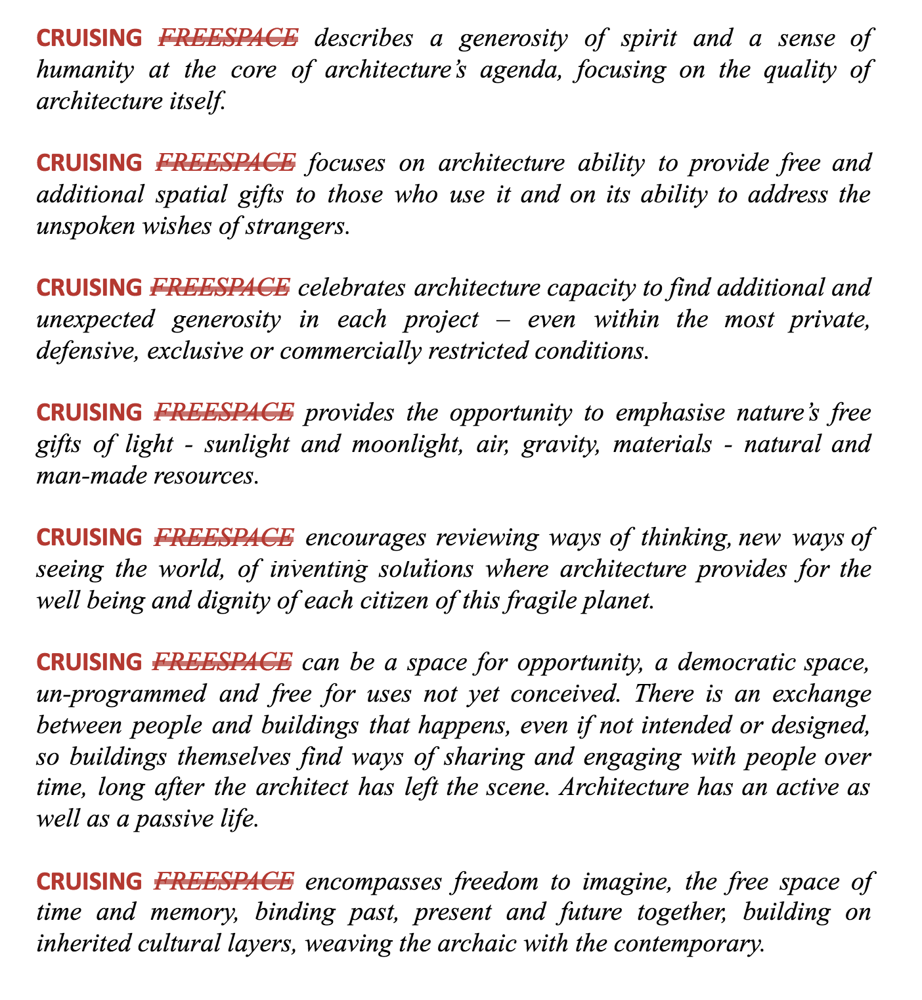
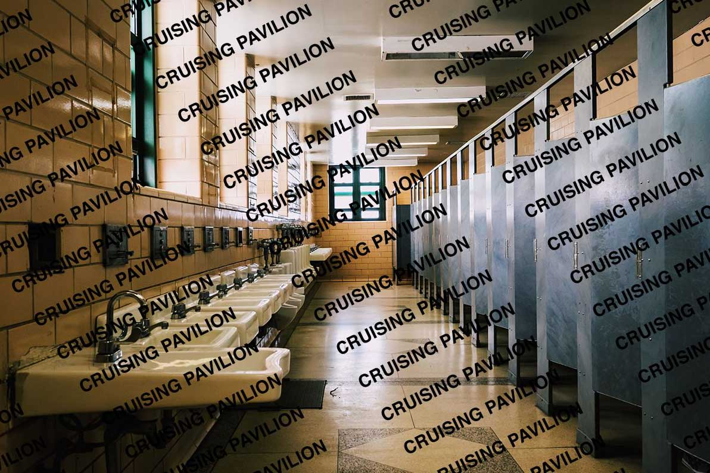

THE CRUISING PAVILION IS A PROJECT CURATED BY
PIERRE-ALEXANDRE MATEOS,
RASMUS MYRUP,
OCTAVE PERRAULT
AND CHARLES TEYSSOU
THAT WILL TAKE PLACE AT SPAZIO PUNCH IN VENICE, ITALY FROM THE 24TH MAY TO 1ST JULY, DURING THE 16TH VENICE ARCHITECTURE BIENNALE. IT IS PRODUCED IN COLLABORATION WITH SPAZIO PUNCH.
16th Venice Architecture Biennale
@ Spazio Punch, Giudecca
24 May - 1 July 2018
Alison Veit
Andreas Angelidakis
Andrés Jaque / Office for Political Innovation
Atelier Aziz Alqatami
Carlos Reyes
Diller Scofidio + Renfro
DYKE_ON
Etienne Descloux
Hannah Quinlan and Rosie Hastings
Henrik Olesen
Ian Wooldridge
S H U Í (Jon Wang and Sean Roland)
Lili Reynaud Dewar
Pascal Cribier and Louis Benech
Monica Bonvicini
Studio Karhard
Studio Odile Decq
Özgür Kar
Pol Esteve and Marc Navarro
Prem Sahib
Tom Burr
Trevor Yeung

PIERRE-ALEXANDRE MATEOS, B. 1989, FRANCE,
AND CHARLES TEYSSOU, B. 1988, FRANCE,
ARE A DUO OF CURATORS AND ART CRITICS. THEY ARE CURRENTLY DOING A SURVEY OF THE SOUTH OF FRANCE FOR THE LUMA ARLES FOUNDATION. PRIOR TO THAT THEY ORGANIZED THE EXHIBITIONS WHAT’S UP DOC? AT NEW GALERIE, PARIS (2017); THE SAINT-CIRQ LAPOPIE BIENNALE(2016); AND THE KING AND THE MOCKINGBIRD AT VERMILION SANDS, COPENHAGEN (2016).
RASMUS MYRUP, B. 1991, DENMARK,
IS AN ARTIST AND CURATOR. HIS RECENT SOLO EXHIBITIONS INCLUDE LOVING THOSE WE LOST BUT NEVER KNEW AT BALICE HERTLING, PARIS (2017), I, SCAVENGER OF CARCASSES AT INTERSTATE PROJECTS, NEW YORK (2015) AND THE UPCOMING HOMO HOMO AT TRANEN, COPENHAGEN (2018). SINCE 2014 HE HAS ALSO BEEN RUNNING THE EXHIBITION PLATFORM WEEKENDS, CURATING AND PRESENTING 20 EXHIBITIONS IN COPENHAGEN, LONDON, NEW YORK AND PARIS.
OCTAVE PERRAULT, B. 1988, FRANCE,
IS AN INDEPENDENT ARCHITECT AND WRITER. HE CO-FOUNDED THE COLLECTIVE ÅYR (FORMERLY KNOWN AS AIRBNB PAVILION) IN 2014, WHO SHOWED AT THE 2014 AND 2016 ARCHITECTURE BIENNALES, THE 9TH BERLIN BIENNALE, THE MUSEUM LUDWIG, AND THE STEDELIJK MUSEUM AMONGST OTHERS. HE IS CURRENTLY EDITING A BOOK ON MIRROR GLASS ARCHITECTURE AND A GUEST-LECTURER AT ARCHITECTURE SCHOOLS IN PARIS AND LONDON.

CRUISING USUALLY DESCRIBES THE QUEST FOR SEXUAL ENCOUNTERS BETWEEN HOMOSEXUAL MEN IN PUBLIC SPACES, BUT IT CANNOT BE REDUCED TO NEITHER MEN NOR HOMOS. THIS SEXUAL PRACTICE GENERALLY TAKES PLACE IN PUBLIC SITES LIKE PARKS, TOILETS, AND PARKING LOTS, OR IN DEDICATED ESTABLISHMENTS LIKE BATHHOUSES AND SEX CLUBS.
FROM THE 19TH CENTURY VAUXHALL PLEASURE GARDENS IN LONDON TO THE 80’S MINESHAFT BDSM CLUB IN NEW YORK, THE CRUISING PAVILION LOOKS AT THE CONFLICTUAL ARCHITECTURE OF CRUISING. SOMEWHERE BETWEEN ANTI-ARCHITECTURE AND VERNACULAR, THE SPATIAL AND AESTHETIC LOGIC OF CRUISING IS INSEPARABLE FROM THE ONE OF THE PROPER METROPOLIS. CRUISING IS THE ILLEGITIMATE CHILD OF HYGIENIST MORALITY. RELEGATED TO THE REALM OF DEPRAVITY, IT FEEDS OFF ITS MOST STRUCTURING DISCIPLINARY FEATURES. IN THE BATHROOMS BUILT FOR CLEANLINESS AND THE PARKS MADE FOR PEACEFULNESS, AND ALSO THROUGH THE FIGURES OF THE POLICEMAN AND THE FLÂNEUR, THE MODERN CITY IS CRUISED, DISMANTLED AND MADE INTO A DRAG OF ITSELF. THE DUNGEON BECOMES PLAYFUL, THE LABYRINTH PROTECTIVE, AND THE BATHS EROTIC. IF “ARCHITECTURAL DISCOURSE IS A DEODORIZER”, THEN CRUISING IS THE POWERFUL HUMAN SMELL THAT HAUNTS THE DREAMS OF JEAN GENET.
THE HISTORICAL MODEL OF CRUISING IS EVOLVING AND PERHAPS EVEN DYING. THE CONTEMPORARY COMBINATION OF GRINDR, URBAN DEVELOPMENT AND THE COMMODIFICATION OF LGBT CULTURE HAS EMPTIED ESTABLISHED CRUISING GROUNDS AND REPLACED GAY BARS WITH CONDOS. GEOSOCIAL APPS HAVE GENERATED A NEW PSYCHOSEXUAL GEOGRAPHY SPREADING ACROSS A VAST ARCHITECTONIC OF DIGITALLY INTERCONNECTED BEDROOMS, THUS DISRUPTING THE INTERSECTIONAL IDEALISM THAT WAS AT PLAY IN FORMER VERSIONS OF CRUISING. TODAY, CLASS, RACE AND GENDER MIGHT BE AS REGULATED BY THE EROTIC SURFACE OF THE SCREEN AS THE ARCHITECTURE OF THE CITY.
BY FEATURING CONTRIBUTIONS FROM ARTISTS AND ARCHITECTS, THE CRUISING PAVILION WISHES TO HIGHLIGHT THE FAILURE TO CONSIDER FREESPACE AS DEFINED BY THIS EDITION OF THE VENICE ARCHITECTURE BIENNALE, WITHOUT QUESTIONING THE HETERO-NORMATIVE PRODUCTION OF SPACE ITSELF. ARCHITECTURE IS A SEXUAL PRACTICE AND CRUISING IS ONE OF THE MOST CRUCIAL ACTS OF DISSIDENCE.


THE CRUISING PAVILION
MADE A FEW URGENT REVISIONS TO THE MANIFESTO ON
“FREESPACE”
MADE BY THE CURATORS OF THE
16TH INTERNATIONAL ARCHITECTURE EXHIBITION:
YVONNE FARRELL AND SHELLEY MCNAMARA:

